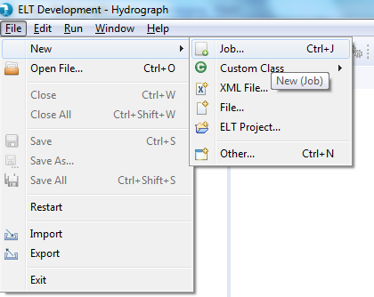
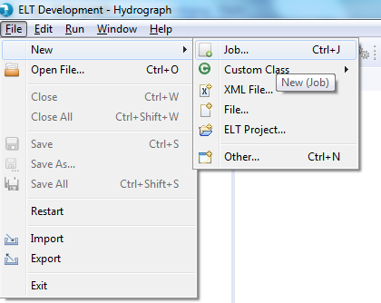
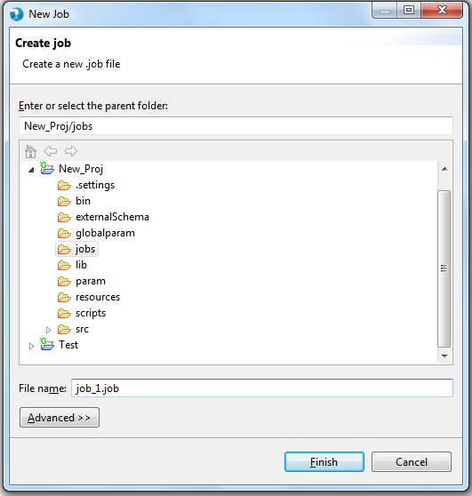

Under the File Menu -> New -> Job, creates a new job on the Canvas

Users can use CTRL + J shortcut key to create an ELT job
Users can alternatively click on the Tool bar button to create a new Job.

How to create an ELT Job
Prerequisite : In order to create an ELT job, at-least one ELT project needs be present in the workspace. Follow the link to Create an ELT Project.
To Create a job in Hydrograph, users have been provided with options in the File menu and the Tool bar.
Under the File Menu -> New -> Job, creates a new job on the Canvas

Users can use CTRL + J shortcut key to create an ELT job
Users can alternatively click on the Tool bar button to create a new Job.
Below image shows the job creation window

Provide the name of the job and select any folder to save job.